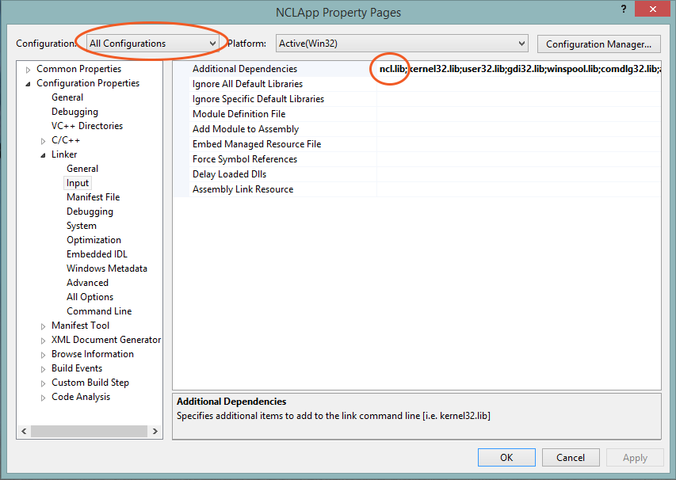

To see a video tutorial on getting started with Nymi Band development on the Windows platform, see Getting started.
Windows based machines require an external USB based BLE dongle. This is necessary since there is no consistently reliable BLE implementation across manufacturers. Currently, the NCL only supports the BlueGiga BLED112 dongle as the bluetooth low energy transceiver. This dongle appears as a serial port to Windows.
The method of communication between a Nymi and an NEA relies on a concept of an ecodaemon. This ecodaemon is a long running process that allows multiple NEAs to communicate to multiple Nymis, forming an ecosystem.
The SDK provides 2 different types of ecodaemons, though only one ecodaemon can run at a time;
- The Nymulator: Allows communication to simulated Nymis and is provided as an executable in the SDK package. A Microsoft Visual 2013 Redistrituble installation is also required, which can also be found beside the executable.
- The Nymi Bluetooth Service: Allows communication to Nymi Bands. The installer can be found in the SDK package and installs a Windows Service. This ecodaemon also requires your computer to have the BLED112 dongle. The driver for this hardware can be found within the Nymi Bluetooth Install Directory.
Getting started with your first NEA Visual Studio 2012 project;
- Ensure one of the two ecodaemons is running on your computer
- Get ncl.h, ncl.lib, and ncl.dll from the SDK package and place them in your project directory
- Open your project in Visual Studio
- In the Solution Explorer, right-click on the project and select Properties.
- In the top left Configuration drop-down menu, select "All Configurations". Do this for all applicable platforms.
- On the navigation pane on the left, expand Configuration Properties, and click on VC++ Directories
- In Include Directories add the relative path to ncl.h. $(ProjectDir) is useful for indicating the current project directory.
- In Library Directories add the relative path to ncl.lib.
- Expand Linker and click on Input
- In Additional Dependencies add _ncl.lib__

- In the same pop-up window, expand Debugging.
- In Environment, add the directory for ncl.dll to PATH.
PATH=$(ProjectDir)/nclDllDirectory;%PATH%
- The following can be included to your program to initialize the NCL for communicating with the Nymulator
#include ncl.h //Includes the ncl library to your project
...
void callback(
NclEvent event,
void* userData){
}else{
}
}
}
...
void initNCL(){
}
}
}
- If the NCL was successfully added to your project and it is communicating with the Nymulator, you will be able to see "An NEA has attached"
- If using the Nymi Bluetooth Service, the nclSetIpAndPort can be omitted
An full example of provisioning and validating a Nymi can be found in the Hello Nymi Tutorial. The Visual Studio 2012 Ultimate project file is provided as example code in the SDK Examples folder.